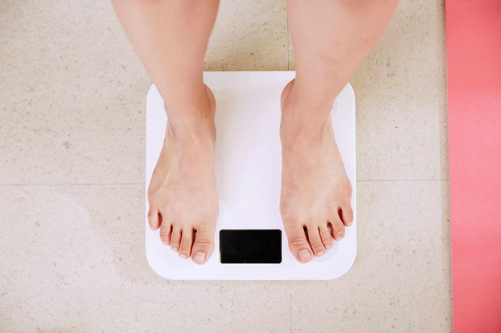

Два человека могут иметь абсолютно одинаковый ИМТ и почти ничего общего физически — один стройный бодибилдер, другой человек с реально избыточным жиром и очень небольшой мышечной массой. Именно это ключевое ограничение лежит в основе всего спора «ИМТ против процента жира», и понимание того, почему так происходит, подскажет, на какое число стоит опираться именно в вашей ситуации.
Что на самом деле считает каждый показатель
ИМТ — простое соотношение: вес в килограммах, делённый на квадрат роста в метрах. Расчёт занимает секунд десять и требует только весы и сантиметр. Процент жира в теле оценивает, какая доля общего веса приходится на жировую ткань, а какая — на безжировую массу (мышцы, кости, органы, воду) — принципиально другой вопрос, требующий либо специального оборудования (DEXA-сканирование, гидростатическое взвешивание), либо достаточно хорошего полевого метода вроде измерения обхватов.
Почему ИМТ не отличает мышцы от жира
Формула ИМТ видит только два числа: вес и рост. У неё нет способа узнать, плотные ли это мышцы или жировая ткань, ведь оба варианта просто отражаются на весах как килограммы. Именно поэтому мускулистый спортсмен и малоподвижный человек одного роста и веса получают идентичный ИМТ, несмотря на совершенно разное состояние здоровья — формула никогда не создавалась для различения типа ткани, только общей массы относительно роста.
В чём процент жира лучше
Поскольку он оценивает реальный состав тканей, а не просто общую массу, процент жира напрямую отвечает на вопрос, на который ИМТ не может: сколько веса этого человека приходится на жир? Два человека с одинаковым ИМТ 24 могут иметь процент жира 15% и 30% соответственно — реально разную картину здоровья, которую сам по себе ИМТ представил бы одним и тем же числом.
Где ИМТ всё же держится хорошо
Ничто из этого не делает ИМТ бесполезным — это действительно хорошо валидированный инструмент скрининга на уровне популяции, с реальной прогностической ценностью для риска сердечно-сосудистых заболеваний, диабета и смертности в больших группах людей. Организации здравоохранения до сих пор используют его именно потому, что он дешёвый, быстрый и достаточно хорошо коррелирует с риском для здоровья у большинства людей, не отличающихся необычной мускулистостью или худобой. Проблема не в самом ИМТ — а в применении популяционного инструмента к индивидуальному крайнему случаю без учёта его известных слепых зон.
Проблема «скрытого жира» (skinny fat)
Ожирение при нормальном весе — иногда называемое «skinny fat» — описывает людей, попадающих в здоровый диапазон ИМТ, но имеющих более высокий, чем идеально, процент жира из-за низкой мышечной массы. Эта группа практически невидима только для скрининга по ИМТ, так как математика веса и роста выглядит совершенно нормально, хотя их профиль метаболического риска может напоминать человека с более высоким ИМТ. Это один из самых наглядных реальных случаев, когда процент жира показывает то, что ИМТ структурно не может.
Практическая точность: насколько «достаточно хорошо» это хорошо?
Золотые стандарты измерения жира, такие как DEXA-сканирование, очень точны, но требуют специального оборудования, недоступного большинству людей на регулярной основе. Полевые методы, такие как метод ВМС США на основе обхватов, гораздо практичнее для домашнего использования и обычно попадают в пределах 3–4 процентных пунктов от показаний DEXA для большинства типов телосложения — достаточно точно, чтобы отслеживать значимые изменения со временем, даже если не с лабораторной точностью.
Что на самом деле стоит отслеживать?
Если вы в целом здоровый взрослый со средним телосложением, ИМТ остаётся вполне разумным быстрым ориентиром — простым, бесплатным и достаточно прогностическим на том популяционном уровне, для которого он создавался. Если вы регулярно тренируетесь, пытаетесь изменить именно состав тела (терять жир при сохранении или наборе мышц), либо просто хотите более полную картину, чем дают вес и рост, процент жира даёт информацию, которую ИМТ структурно не может дать: действительно ли меняющееся на весах число — это жир, или что-то ещё.
Эти два показателя не столько конкурируют, сколько отвечают на разные вопросы — ИМТ отвечает «находится ли мой вес в типичном для популяции здоровом диапазоне», а процент жира отвечает «из чего на самом деле состоит мой вес». Для большинства людей отслеживание обоих вместе, а не выбор одного как однозначно превосходящего, даёт самую полную картину.
Частые вопросы
Может ли быть нормальный ИМТ, но высокий процент жира?
Да — это достаточно распространено, чтобы иметь собственное название — «skinny fat» или ожирение при нормальном весе, когда у человека здоровый ИМТ, но более высокий, чем идеально, процент жира из-за низкой мышечной массы.
Что отслеживать для прогресса похудения?
Процент жира даёт более осмысленную картину прогресса, так как отличает потерю жира от потери мышц, но ИМТ проще отслеживать стабильно, так как требует только весы и рост.
Значит ли это, что ИМТ совсем бесполезен?
Нет — на уровне популяции ИМТ остаётся действительно полезным, дешёвым инструментом скрининга с реальной прогностической ценностью для показателей здоровья. Проблемы в основном в индивидуальных крайних случаях, вроде спортсменов или профиля «skinny fat».
Как точнее всего измерить процент жира дома?
Метод ВМС США на основе обхватов — самый практичный точный вариант для домашнего использования, обычно попадающий в пределах 3-4 процентных пунктов от золотых стандартов вроде DEXA-сканирования.